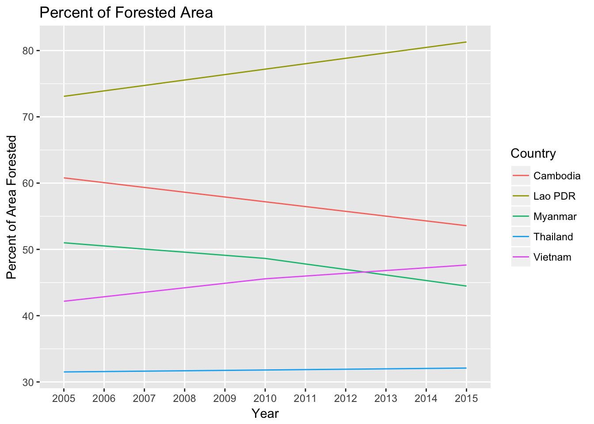
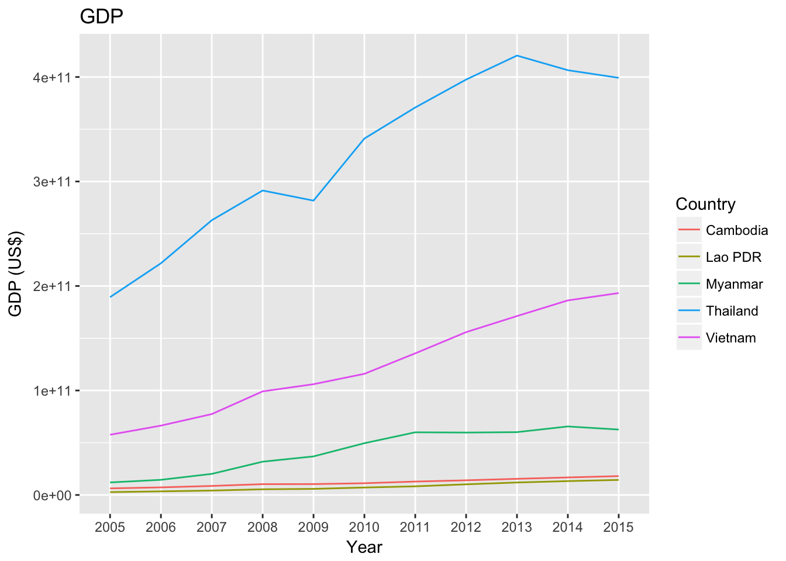

Southeast Asia is amongst the fastest growing regional economies in the world. With booms in manufacturing, energy, tourism, and palm oil production, the region faces rapid growth in development and infrastructure. The region is also host to one of 25 biodiversity hotspots in the world, containing tropical rainforests and expansive wetlands. This study evaluates how expansive and rapid the agent of deforestation is enveloping the region, in wake of rapid development between 2005 and 2015. If a country’s economy has experienced a rapid surge between 2005 and 2015, then the rate and magnitude of deforestation will also increase to coincide with economic expansion. The study area will examine historic Indochina; Myanmar, Thailand, Laos, Cambodia, and Vietnam. The area of forest lost in each country is compared with economic indices such as GDP to show the relationship between economic development and the area of forest lost in the region. Deforestation mapping using data from The World Bank and the Sustainable Society Index is used in conjunction with remotely sensed data to visualize the magnitude of forest loss. Based upon the results, international efforts in the promotion of sustainable forestry can be directed appropriately to countries of rapid deforestation.
library(dplyr)##
## Attaching package: 'dplyr'## The following objects are masked from 'package:stats':
##
## filter, lag## The following objects are masked from 'package:base':
##
## intersect, setdiff, setequal, unionlibrary(ggplot2)
library(tidyverse)## Loading tidyverse: tibble
## Loading tidyverse: tidyr
## Loading tidyverse: readr
## Loading tidyverse: purrr## Conflicts with tidy packages ----------------------------------------------## filter(): dplyr, stats
## lag(): dplyr, statsdownload.file("http://api.worldbank.org/v2/en/indicator/AG.LND.FRST.ZS?downloadformat=csv",destfile = "data/forest.zip")
unzip("data/forest.zip",exdir = "data")
Forest_data<-read.csv("data/API_AG.LND.FRST.ZS_DS2_en_csv_v2.csv",skip=4)
Forest_filter<- dplyr::filter(Forest_data,Forest_data$Country.Name=="Thailand" |Forest_data$Country.Name=="Cambodia"|Forest_data$Country.Name=="Vietnam"|Forest_data$Country.Name=="Myanmar"|Forest_data$Country.Name=="Lao PDR")
For_subset<-subset(Forest_filter,select=-c(5:49,61:62))
Forest_G<-gather(For_subset,"Year","Forest",5:15)%>%
mutate(Year=(sub("X","",Year)))
Forest_Plot<-ggplot(Forest_G,aes(x=Year,y=Forest,group=Country.Name))
Forest_Plot+
geom_line(aes(color=factor(Country.Name)))+labs(title="Percent of Forested Area",y="Percent of Area Forested",color="Country")
download.file("http://api.worldbank.org/v2/en/indicator/NY.GDP.MKTP.CD?downloadformat=csv",destfile = "data/GDP.zip")
unzip("data/GDP.zip",exdir = "data")
GDP<-read.csv("data/API_NY.GDP.MKTP.CD_DS2_en_csv_v2.csv",skip=4)
GDP_filter<-dplyr::filter(GDP,GDP$Country.Name=="Thailand"|GDP$Country.Name=="Cambodia"|GDP$Country.Name=="Vietnam"|GDP$Country.Name=="Myanmar"|GDP$Country.Name=="Lao PDR")
GDP_subset<-subset(GDP_filter,select=-c(5:49,61:62))
GDP_G<-gather(GDP_subset,"Year","GDP",5:15)%>%
mutate(Year=(sub("X","",Year)))
GDP_Plot<-ggplot(GDP_G,aes(x=Year,y=GDP,group=Country.Name))
GDP_Plot+
geom_line(aes(color=factor(Country.Name)))+labs(title="GDP",y="GDP (US$)",color="Country")